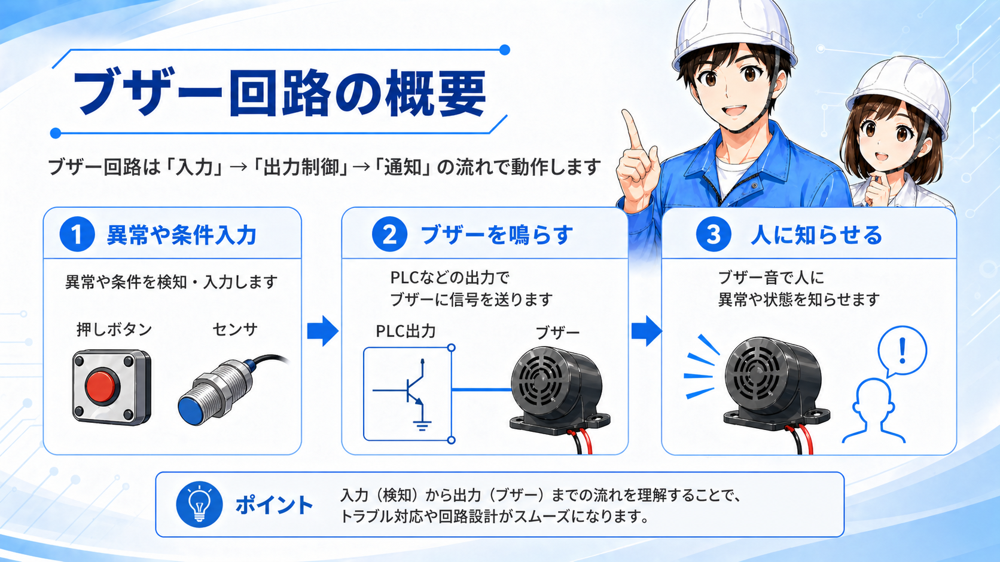
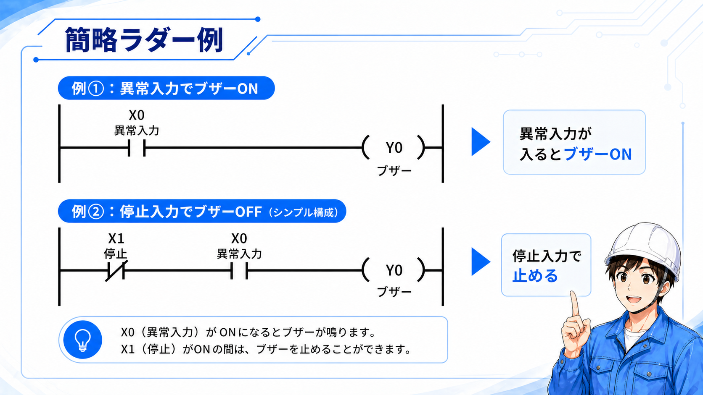
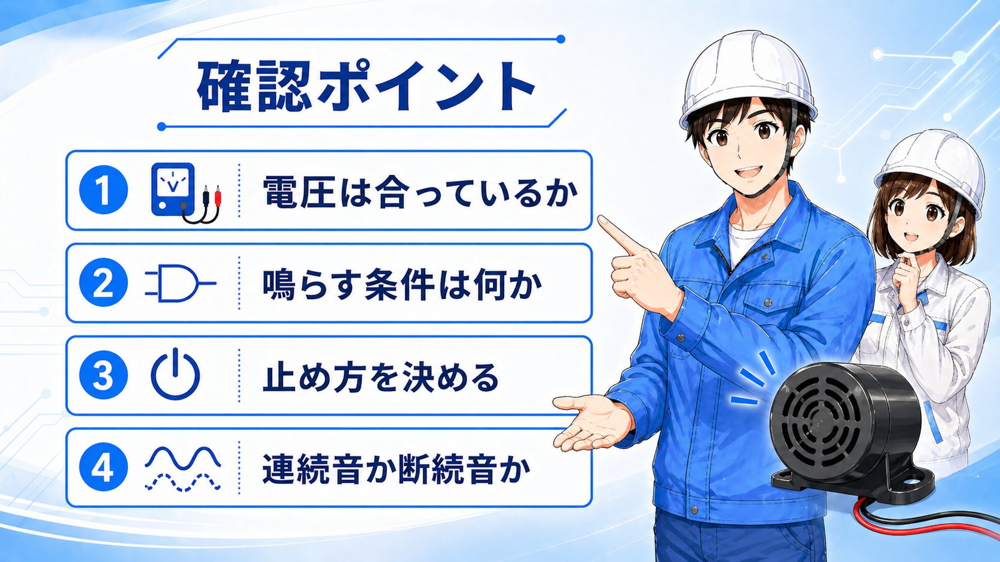

この記事が向いている人
- 異常時にブザーを鳴らす回路の考え方を知りたい人
- PLC出力とブザーの関係を整理したい人
- ラダー図でブザー回路を追えるようになりたい人
ブザー回路は、異常や条件を検知した時に、音で人へ知らせるための回路です。
ランプ表示が「目で見る通知」だとすると、ブザーは「耳で気づく通知」です。設備の異常、ワーク詰まり、扉開放、圧力低下、動作完了など、作業者に気づいてほしい場面で使われます。
考え方は難しくありません。まず入力条件が入り、その条件をもとにPLCやリレーで出力を作り、ブザーへ信号を送ります。つまり、ブザー単体を見るよりも、「何をきっかけに鳴らすのか」「どうやって止めるのか」をセットで見ることが大切です。


先輩ブザーは「鳴らす部品」だけを見ても分かりにくいです。先に、何を検知したら鳴らすのかを決めると整理しやすいです。

後輩ランプ表示と似ていますね。目で知らせるか、音で知らせるかの違いとして見ると分かりやすいです。
ブザー回路で最初に見るのは、ブザー本体ではなく条件です。
たとえば「異常入力が入ったら鳴らす」「センサが一定時間ONのままなら鳴らす」「完了信号が出たら短く鳴らす」など、鳴らす理由をはっきりさせます。
PLCで見る場合は、入力側に異常や条件、出力側にブザーを置いて考えます。GX Works3でラダーを見る時も、まず左側の条件が成立しているかを確認し、次に右側のブザー出力がONしているかを見る流れです。
ブザーが鳴らない時も、いきなりブザー本体を疑うのではなく、入力条件、ラダー上の出力、実際の電圧の順に確認すると原因を追いやすくなります。
| 見る場所 | 内容 | 現場での確認 |
|---|---|---|
| 入力条件 | 異常・センサ・押しボタンなど | そもそも鳴らす条件が入っているか |
| ラダー | 条件が成立してY出力がONしているか | モニタで接点とコイルの状態を見る |
| 出力配線 | PLC出力やリレーからブザーへ信号が出ているか | 電圧や端子台を確認する |
| ブザー本体 | 電圧仕様や故障の有無 | 定格電圧、極性、音量を確認する |
一番シンプルな考え方は、異常入力が入ったらブザー出力をONする形です。
ここでは概念を追いやすくするため、実機メーカーの画面そのものではなく、初心者向けの簡略ラダーとして整理します。

例①では、X0の異常入力がONになるとY0のブザー出力がONします。これは「条件が入ったら鳴らす」だけの分かりやすい形です。
例②では、X1の停止入力を条件に入れています。現場では、ブザーを鳴らしっぱなしにせず、確認後に止めたい場面があります。そのため、鳴らす条件だけでなく、止める条件も一緒に考えておくと実務で使いやすくなります。

ブザーは人に知らせるための通知です。非常停止や安全リレーのように、危険を直接止める安全回路とは役割を分けて考えます。
ブザー回路で意外と大事なのが、止め方です。
異常が出た時に鳴らすだけなら簡単ですが、現場では「確認したら止めたい」「異常が消えるまで止めたくない」「一定時間だけ鳴らしたい」など、運用によって考え方が変わります。
異常入力がOFFになったら、ブザー出力もOFFにする考え方です。シンプルですが、異常が一瞬だけ出た場合は気づきにくいことがあります。
作業者が確認した後に、停止ボタンや確認ボタンでブザーを止める考え方です。現場ではよく使われます。
タイマーを使って数秒だけ鳴らす考え方です。完了通知や軽い注意喚起に向いています。
ON/OFFを繰り返して鳴らすと、連続音より気づきやすい場合があります。ただし、回路は少し複雑になります。
ブザーは鳴ればよいだけではありません。止め方が曖昧だと、現場でうるさいだけになったり、逆に異常に気づきにくくなったりします。
ブザーが鳴らない時は、ブザー本体だけを見るのではなく、入力条件から順番に確認します。
特にPLC出力を使っている場合は、ラダー上でY出力がONしているか、実際に端子へ電圧が出ているかを分けて見ることが大切です。

DC24V用、AC100V用など、ブザーの定格電圧と実際の電源が合っているか確認します。
異常入力やセンサ入力が本当にONしているかを、ラダーや入力ランプで確認します。
ラダー上のY出力がONしているか、PLC出力端子に電圧が出ているかを分けて見ます。
停止入力や確認入力が入ったままになっていて、ブザー出力を止めていないか確認します。
DCブザーでは極性があるものもあります。電圧違いや配線違いは故障につながることがあるため、実機では必ず仕様を確認してください。